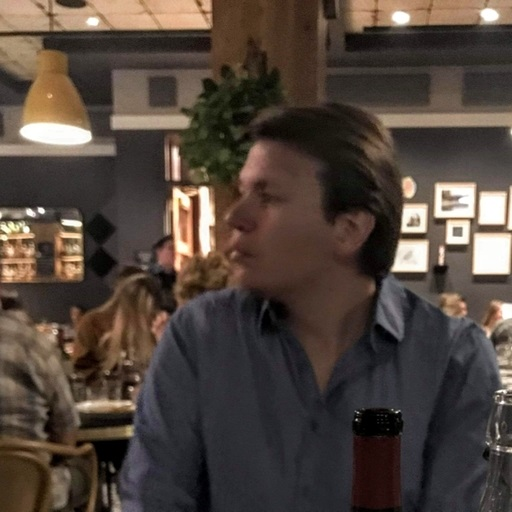

<!DOCTYPE html>
<html lang="en">
  <head>
    <meta http-equiv="Content-Type" content="text/html; charset=utf-8" />
  </head>
  <title>Michael Sanchez | Web Developer</title>
  <meta name="description" content="A portfolio website to showcase Michael Sanchez's web development work.">
    <meta name="viewport" content="width=device-width, initial-scale=1" />
    <link rel="shortcut icon" href="i/favicon.png" type="image/png" />
    <link href="https://fonts.googleapis.com/css?family=Abhaya+Libre:400,700" rel="stylesheet">
    <link rel="stylesheet" href="style.css" />
</html>


<body id="body" class="< echo pageName; ?>">
  <div class="content-wrap">
  
  <header class="about">
      <div class="grid">
        <div class="column text">
          <h1>Michael Sanchez</h1>
          <p>I am a professional web developer with a <em>Bachelor of Arts, Dual Major in International Studies and Political Science</em> from <b>Colorado State University</b>. I learned web development from Lambda School where I graduated summer 2021. </p>
          <p>I have an educational background in International Studies and professional background in Pharmaceuticals. These vastly different fields have helped me develop a well-rounded skillset of understanding high-level, macro concepts as well as detail-oriented, precision work. I am interested in the intersections of tech and finance as well as cybersecurity in global affairs. I am currently developing projects in JavaScript and learning Solidity.
          </p>            
        </div>
        <div class="column image">
            
        </div>
      </div>
  </header>

  <section class="skills">
    <h2>Skills</h2>
    <div class="grid">
      <div class="column">
        <h3>Languages, Libraries & Frameworks</h3>
        <ul>
          <li>Semantic HTML + HTML5</li>
          <li>CSS + SCSS</li>
          <li>Javascript + Node.js, React.js, Express.js</li>
          <li>SQL</li>
          <li>Python</li>
        </ul>
      </div>
      <div class="column">
        <h3>Tools</h3>
        <ul>
          <li>sqlite3</li>
          <li>knex.js</li>
          <li>Git</li>
          <li>Postman</li>
          <li>Jest Testing</li>
          <li>Cypress Testing</li>
        </ul>
      </div>
      <div class="column">
        <h3>Other</h3>
        <ul>
          <li>Redux</li>
          <li>Relational Database Management</li>
          <li>Responsive design and development</li>
          <li>API integration</li>
        </ul>
      </div>
    </div>
  </section>

  <section class="projects">
    <h2>Projects</h2>
    <div class="grid">
      <div class="column title">
        <h3><a href="https://github.com/MichaelS42/back-end/tree/michael-sanchez" target="_blank">Secret Family Recipes</a></h3>
        <p>Built the Back End Web API with recipe database</p>
        <ul>
          <li>Built with node.js, express.js, knex.js and sqlite3</li>
          <li>Wrote authentication and used jsonwebtokens for multiple api routes</li>
        </ul>
      </div>
      <div class="column title">
        <h3><a href="https://github.com/Lambda-School-Labs/frontend-vbb-portal" target="_blank">Village Book Builders</a></h3>
        <p>Non-profit project focused on empowering people in rural communities through education.</p>
        <ul>
          <li>Worked primarily on front end for about two months</li>
          <li>Focused on implementing the search function into redux</li>
        </ul>
      </div>
      <div class="column title">
        <h3><a href="https://github.com/MichaelS42/dark-mode.git-webpt19" target="_blank">Crypto Charts, Dark Mode</a></h3>
        <p>Lambda School Project</p>
        <ul>
          <li>Built custom React.js hooks</li>
          <li>Enabled the ability to use "Dark Mode"</li>
        </ul>
      </ul>
    </div>
    <div class="column title">
      <h3><a href="https://github.com/MichaelS42/React-Components-Insta-Clone" target="">Instagram Clone</a></h3>
      <p>Module Project for Composing React Components and Passing Data Via Props</p>
      <ul>
        <li>Composed react components</li>
        <li>Worked on passing data via props</li>
      </ul>
    </div>
  </div>
</section>

  <section class="experience">
    <h2>Experience</h2>
    <div class="grid">
      <div class="column title">
        <h3>Tolmar Pharmaceuticals</h3> 
        <h4><em>Computer System Validation Specialist</em></h4>
        <p class="timeframe"><small>April 2022-Present</small></p>
      </div>
      <div class="column description">
        <ul class="bullet_point">
        <li> Generate and execute computer system validation deliverables including Computer System Classification, User Requirements Specification and Validation Plans</li>
        <li>Create and perform qualification deliverables: Installation – IQ, Operational – OQ, and Performance – PQ</li>
        <li>Assist with maintenance of cGMP critical laboratory instruments and associated software and computers</li>	
        <li>Support IT projects and integration of lab systems into other company software systems</li>
        <li>Strong understanding of FDA regulated environments and general knowledge of the GxPs and 21 CFR part 11</li>
      </ul>
      </div>
    </div>
    <div class="grid">
      <div class="column title">
        <h3>Tolmar Pharmaceuticals</h3> 
        <h4><em>Stability Associate</em></h4>
        <p class="timeframe"><small>2019-April 2022</small></p>
      </div>
      <div class="column description">
        <ul class="bullet_point">
        <li>Generate and edit Stability documents in Tolmar's Quality Management System, Veeva - which includes protocols, procedures, forms and other controlled documents</li>
        <li>Gather development and commercial development product information from data sheets and transfer the data into the validated stability database</li>
        <li>Review batch records and receiving inspection records for components that are included in stability lots in order to compile product profiles used in stability FDA reports</li>
        <li>Reconfigured LIMS (Laboratory Information Management System) software used to generate Certificates of Analysis for all products</li>	
      </ul>
      </div>
    </div>
    <div class="grid">
      <div class="column title">
        <h3>Tolmar Pharmaceuticals</h3> 
        <h4><em>Material Handler</em></h4>
        <p class="timeframe"><small>2017-2019</small></p>
      </div>
      <div class="column description">
        <ul class="bullet_point">
        <li>Led all clinical, development and commercial shipments of Tolmar's finished pharmaceutical products for marketing partners</li>
        <li>Trained about 11 employees on shipping and maintaining cGMP (Current Good Manufacturing Practices) warehouse</li>
        <li>Researched and implemented new logistic tools such as temperature monitoring devices and shipping containers</li>
        <li>Utilized IATA and DOT shipping certificates to excecute proper shipment of active pharmaceutical components</li>	
      </ul>
      </div>
    </div>
  </section>
  

  <footer>
    <h2>Contact</h2>
    <ul class="social">
      <li><a href="https://github.com/MichaelS42" target="_blank">Github</a></li>
      <li class="linkedin"><a href="https://www.linkedin.com/in/sanchez-michael/" target="_blank">LinkedIn</a></li>
      </ul>
      <ul class="email">
        <li> <a href="mailto:michaelsanchez42@live.com" target="_blank" title="Email me">michaelsanchez42@live.com</a></li>
      </ul>
    </ul>
    <p><em><small>This site is set in Abhaya Libre, a typeface designed by Sol Matas and Pushpanada Ekanayake. Format and style inspired/borrowed from Alison McKay</small></em></p>
  </footer>


